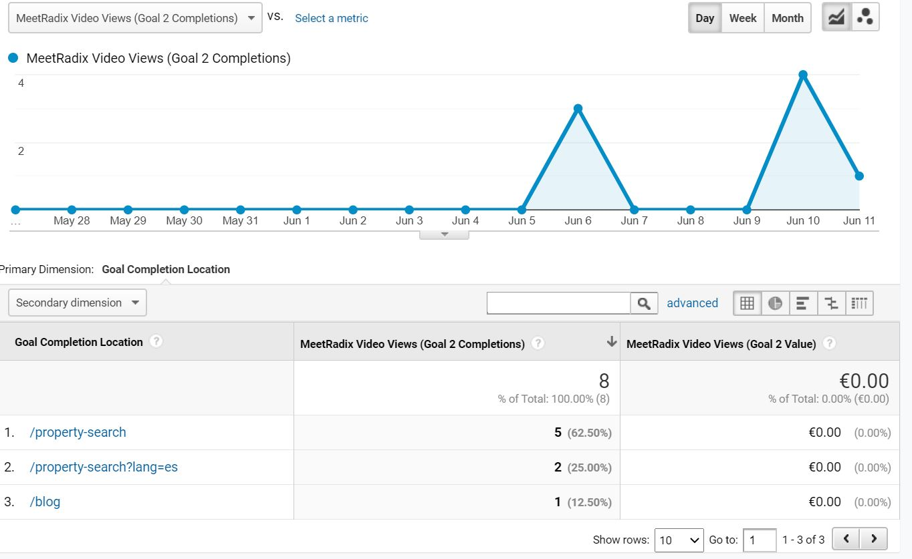
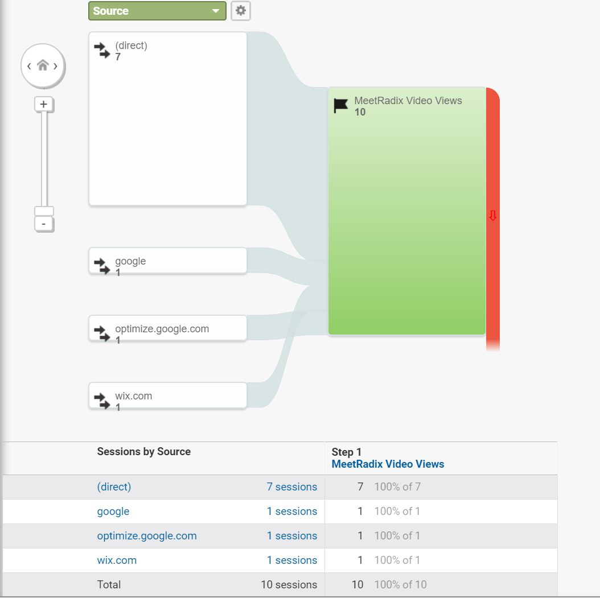
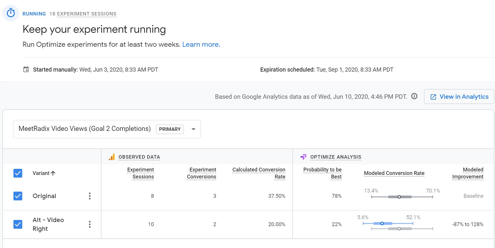

Radix Content Experiment and Goal Tracking Overview
For the past few weeks I have been using Google's tools to monitor visitor behavior of the Radix website and to drive them to watch the "Meet Radix" video. The website was built with Wix.com. The video was originally available only on the Blog page of the website. Based on user input, it was also added to the Personal Shopper page.
 At the top right of the Radix Blog page, there is an entry for the "Meet
Radix"
video.
This "Meet Radix" YouTube video is accessible through the Personal Shopper
page
of the Radix website.
At the top right of the Radix Blog page, there is an entry for the "Meet
Radix"
video.
This "Meet Radix" YouTube video is accessible through the Personal Shopper
page
of the Radix website.
Have I been successful at driving my users to my goal?
 Google Analytics shows the vistors who achieved the goal of playing the "Meet Radix" videoSince I started tracking this goal on the morning of June 3rd, 8 visitors have completed the goal of viewing the "Meet Radix" video:
- 5 visitors played the video from the English Property Search Page
- 2 visitors played it from the Spanish Property Search page
- 1 visitor played the video from the Blog page
I can say that more people played the video after I started my experiment as there were no views in the week before starting the experiment. However, it is challenging to draw conclusions about success of the goal with such little data, especially when I look closer at it.
 Google Analytics shows the source of sessions where the "Meet Radix" video was played. 7 came directly to the Personal Shopper page. 1 from Google, 1 from Google Optimize, and 1 from wix.comI'd like to say that the data shows that the Personal Shopper page is a better location for the video because almost all new views were from that Page, but it's more likely that the increase in views is directly related to my efforts to obtain data for the Content Experiment. I sent the link to the Personal Shopper page to friends and family asking them to visit the Personal Shopper Page. The views seem to be from users navigating directly to the Personal Shopper page rather than users who found their way there browsing the site from home page or other starting point. I assume the completions that originated from tools like Google Optimize and Wix represent my own sessions when I was setting up and testing the experiment. Let's move on to those results.
Content Experiment Results
Last week, I set up a Content Experiment to see if more users would click on the video if it were on the left or right side of the screen.
In the Original version of the Personal Shopper page, the Meet Radix video is on the left side. In the Alternative version of the Personal Shopper page, the Meet Radix video is on the right side.While Google Optimize recommends running this experiment for 2 week more, early results show the original variant (video on the left side of the page) in the lead with a 78% change of being the winner. Based on this data, I would say that having the video as the first piece of content on the page leads to more views than when the text comes before the video.
 Early Google Optimize results show 18 experiment sessions. 8 saw the original left hand placement of the video and 10 saw the alternate right hand placement. 37.5% of the original layout sessions played the video. Only 20% of the alternate layout sessions played it.If the data continues to show that more visitors play the video in the original version of the page, I will leave the video in that position when I end the experiment.
Other Data Considerations
Are you comfortable with this data collection and usage?
I like the idea of using real data about user interaction with a website to make that website better for those users. As we've learned with our usability tests in this course, observing users is one of best ways to improve a website.
However, looking at the details that are available about individual users, such as their geographic location along with what they clicked and when they clicked it, feels invasive. Users should at least know that their interactions with the website are being recorded for analysis and given the option to opt out.
Have you been tempted to use less ethical means of converting users?
While less ethical means such as misrespresenting links, spamming, and false keywords may create a temporary increase in a goal like increasing video views, I believe this approach would backfire in the long run. It would lead to disappointed, frustrating visitors who were not reaching the information they were looking for and instill a feeling of distrust that would prevent them from returning.
Are these Google's tools for tracking and analyzing visitor data usable?
Yes, I was particulary impressed with how easy it was to create an alternate version of a web page in Google Optimize for the Content Experiment. Not only does the tool track the results of the experiment, but alternate variations are created directly in the tool.
I feel like I've just scratched the surface of what Google Analytics and Google Tag Manager can do, but it was helpful to get some experience in how to use them to measure user behavior that is important for a website